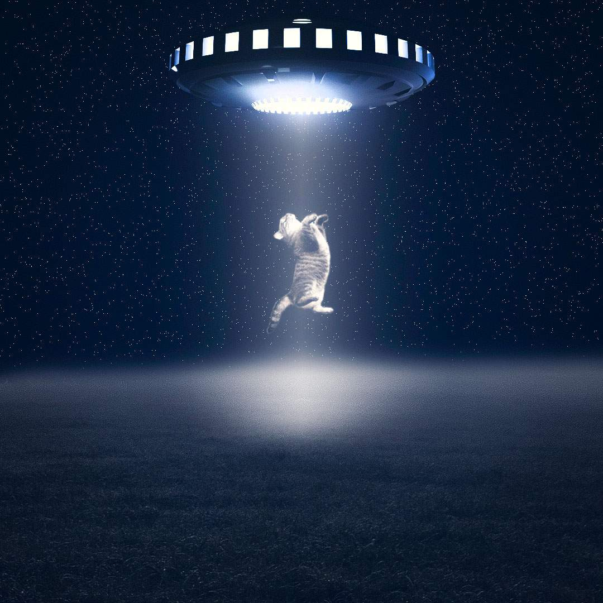
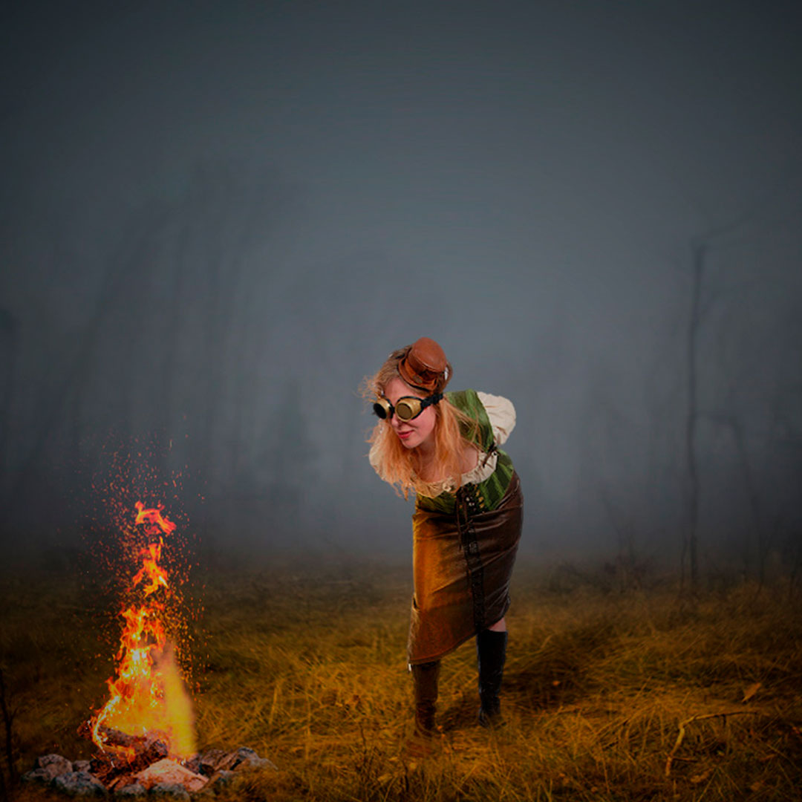
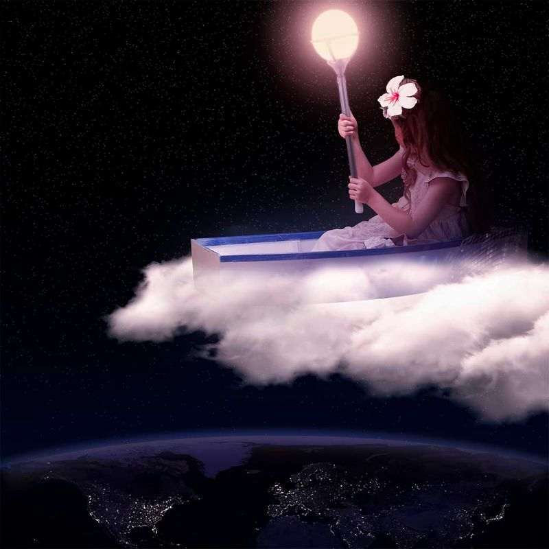
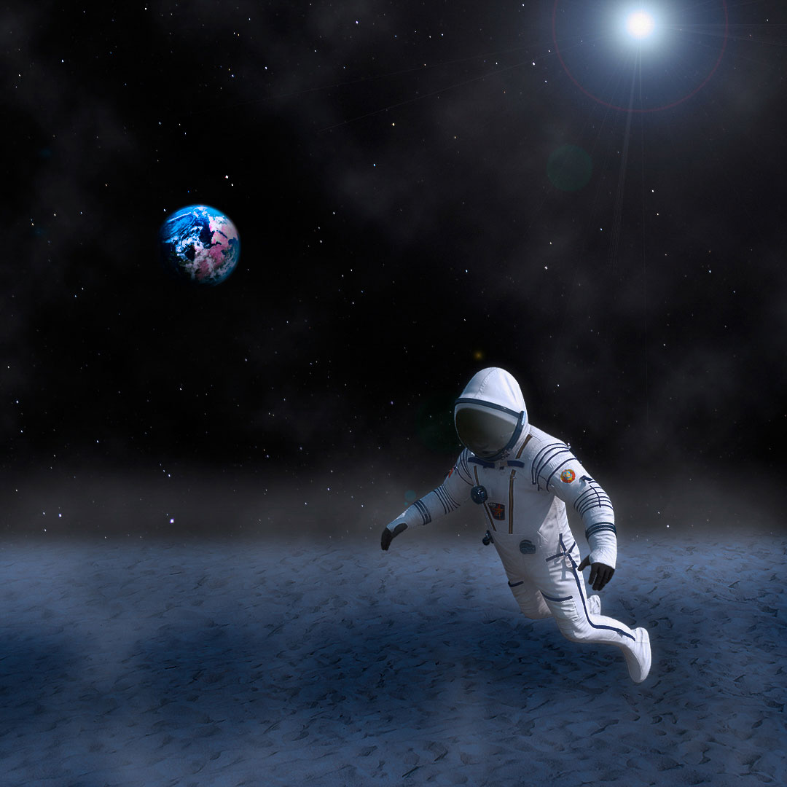
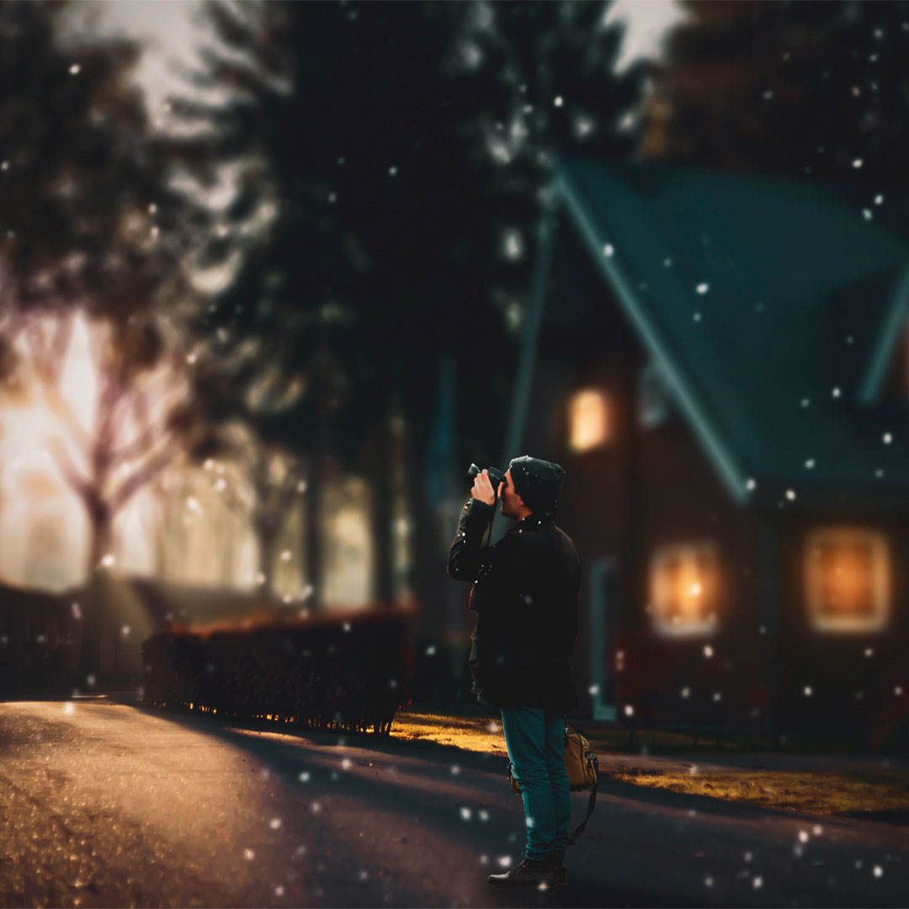
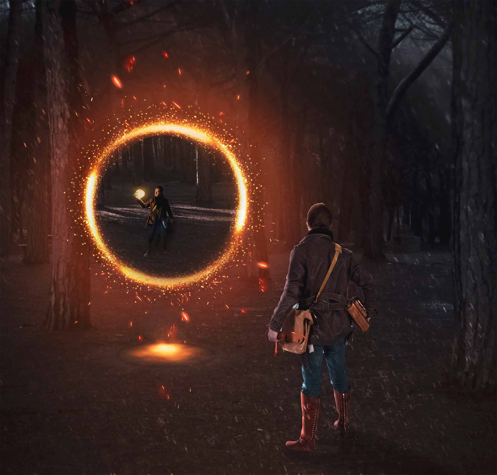

- 
Abdução.
- 
Olhar atento.
- 
A felicidade pode ser encontrada mesmo nas horas mais difíceis, se você lembrar de acender a luz.

Carro espacial.
- 
Um pequeno passo para o homem mas um grande passo para a humanidade.
- 
A fotografia é uma das poucas coisas que tem poder sobre o tempo: ela o paralisa.

E o vento levou.
- 
Quando você olha muito tempo para o abismo, o abismo olha para você.